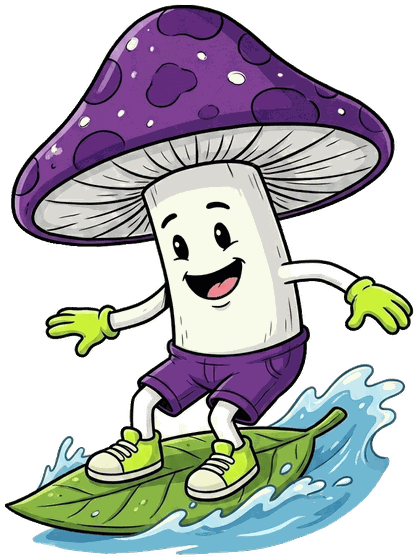
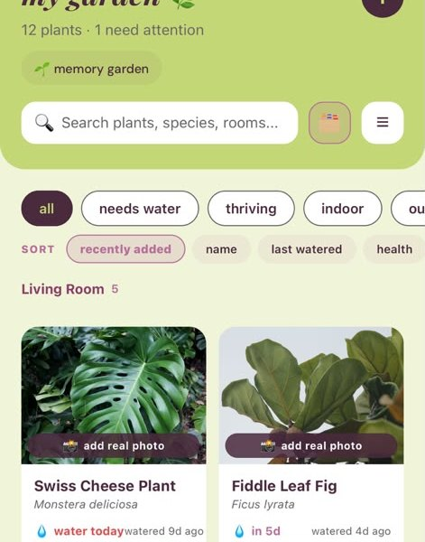
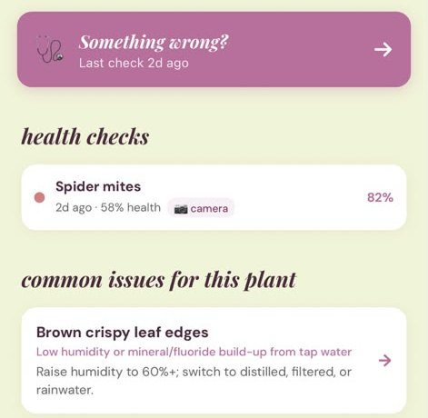
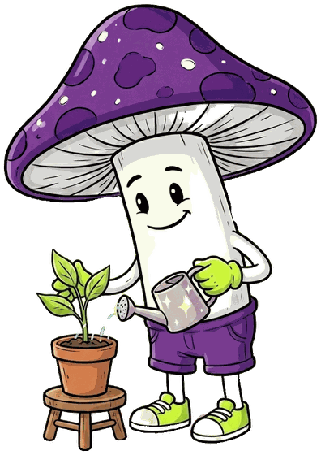
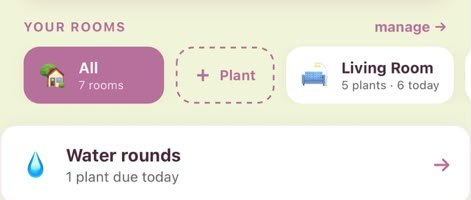
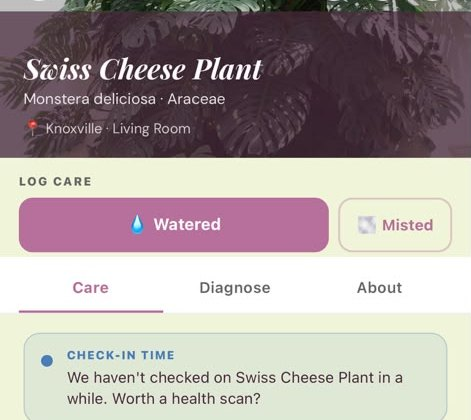
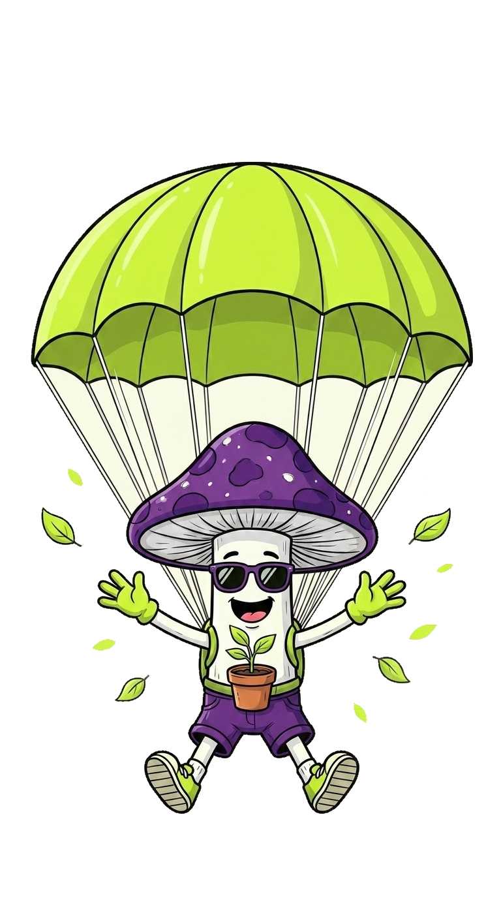
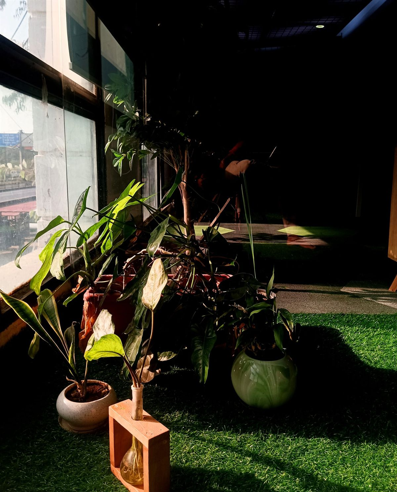

every plant,
cared for right.
pocket planter identifies your plant from a photo, builds its care around your rooms and your weather, and tells you what to do today.
free during the beta · iPhone · made in Knoxville, Tennessee

pick a plant.
this is the card the app builds for it, from a catalog of 4,000+ species. real data, not a demo.
the app then shifts these days for your room's light and your weather.
Water when the top 1-2 inches of soil feel dry; keep just moist in winter.
first, scan it.
take a photo. planter names the species, shows photos to compare, and asks for a second shot when it is not sure.

small things, done right.




free while we build it.
a small group is using pocket planter before launch. everything is open, nothing costs anything.
that includes unlimited plants, identification, diagnosis, the planter assistant, weather-aware schedules and the photo timeline. when we launch, beta testers get a thank-you we will announce in the app first.
what we ask of you.
use it with your real plants for a few weeks, and tell us what is great, what is broken and what is missing.
- there is a "send feedback" button in your profile. it reaches us directly, and we read every message.
- tell us when the app is wrong about a plant. the catalog grows from what you scan.
- no surveys, no calls. the app itself is the questionnaire.
iPhone only for now. Android comes after the beta.

questions people ask.

join the beta.
leave your email and we send the TestFlight invite when it is your turn. no spam, no newsletter: one email, from a person.